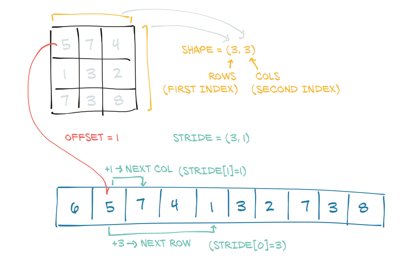
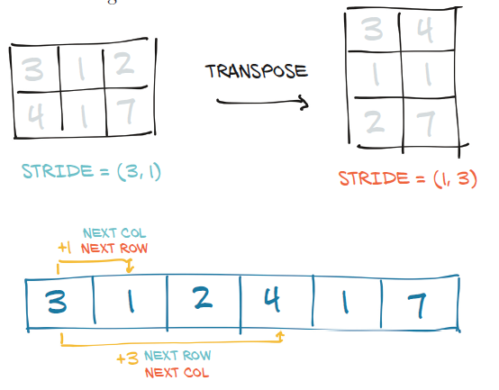

1. operaciones con tensores.#
En este apartado vamos a contemplar ciertas operaciones con tensores de alto nivel
import torch
# Creamos dos tensores
img_t = torch.randn(3, 5, 5) # shape [channels, rows, columns]
weights = torch.tensor([0.2126, 0.7152, 0.0722])
Creamos un nuevo tensor para las operaciones de batch
batch_t = torch.randn(2, 3, 5, 5) # shape [batch, channels, rows, columns]
# Calculamos la media en la dimensión -3 (channels)
img_gray_naive = img_t.mean(-3)
# Calculamos la media en la dimensión -3 (channels)
batch_gray_naive = batch_t.mean(-3)
img_gray_naive.shape, batch_gray_naive.shape
(torch.Size([5, 5]), torch.Size([2, 5, 5]))
1.1. Squeeze y unsqueeze.#
La operación de squeeze sirve para eliminar ciertas dimensiones de los tensores.
x = torch.zeros(2, 1, 2, 1, 2)
torch.squeeze(x).shape
torch.Size([2, 2, 2])
Con unsqueeze hacemos lo contrario. Así por ejemplo el tensor de pesos creado anteriormente, si le queremos añadir más dimensiones, lo haríamos de la siguiente manera
weights.unsqueeze(-1)
tensor([[0.2126],
[0.7152],
[0.0722]])
weights.unsqueeze(-1).unsqueeze_(-1)
tensor([[[0.2126]],
[[0.7152]],
[[0.0722]]])
1.2. Tensores nombrados.#
POdemos nombrar a los tensores, desde la versión 1.3 de PyTorch. Por ejemplo
weights_named = torch.tensor([0.2126, 0.7152, 0.0722], names=['channels'])
weights_named
C:\Users\Francisco\AppData\Local\Temp\ipykernel_13660\2371314847.py:1: UserWarning: Named tensors and all their associated APIs are an experimental feature and subject to change. Please do not use them for anything important until they are released as stable. (Triggered internally at ..\c10/core/TensorImpl.h:1791.)
weights_named = torch.tensor([0.2126, 0.7152, 0.0722], names=['channels'])
tensor([0.2126, 0.7152, 0.0722], names=('channels',))
Cuando ya tenemos un tensor y queremos añadir nombres (pero no cambiar los existentes existentes), podemos llamar al método refine_names. De forma similar a la indexación, la elipsis (…) permite omitir cualquier número de dimensiones.
img_named = img_t.refine_names(..., 'channels', 'rows', 'columns')
batch_named = batch_t.refine_names(..., 'channels', 'rows', 'columns')
print("img named:", img_named.shape, img_named.names)
print("batch named:", batch_named.shape, batch_named.names)
img named: torch.Size([3, 5, 5]) ('channels', 'rows', 'columns')
batch named: torch.Size([2, 3, 5, 5]) (None, 'channels', 'rows', 'columns')
1.3. Tipos de tensores.#
torch.float32 or torch.float: 32-bit floating-point
torch.float64 or torch.double: 64-bit, double-precision floating-point
torch.float16 or torch.half: 16-bit, half-precision floating-point
torch.int8: signed 8-bit integers
torch.uint8: unsigned 8-bit integers
torch.int16 or torch.short: signed 16-bit integers
torch.int32 or torch.int: signed 32-bit integers
torch.int64 or torch.long: signed 64-bit integers
torch.bool: Boolean
Veamos algunos ejemplos
double_points = torch.ones(10, 2, dtype=torch.double)
short_points = torch.tensor([[1, 2], [3, 4]], dtype=torch.short)
short_points.dtype
torch.int16
double_points = torch.zeros(10, 2).double()
short_points = torch.ones(10, 2).short()
1.4. Almacenamiento de tensores.#
PyTorch almacena en memoria los números de forma consecutiva. Veamos un ejemplo sencillo.
points = torch.tensor([[4.0, 1.0], [5.0, 3.0], [2.0, 1.0]])
points
tensor([[4., 1.],
[5., 3.],
[2., 1.]])
El almacenamiento interno lo vemos con el método storage()
points.storage()
C:\Users\Francisco\AppData\Local\Temp\ipykernel_13660\2396954748.py:1: UserWarning: TypedStorage is deprecated. It will be removed in the future and UntypedStorage will be the only storage class. This should only matter to you if you are using storages directly. To access UntypedStorage directly, use tensor.untyped_storage() instead of tensor.storage()
points.storage()
4.0
1.0
5.0
3.0
2.0
1.0
[torch.storage.TypedStorage(dtype=torch.float32, device=cpu) of size 6]
a = points.storage()
print(type(a))
print(a.dtype)
<class 'torch.storage.TypedStorage'>
torch.float32
1.4.1. Stride.#
El stride es el número de elementos del almacenamiento que hay que saltar para obtener el siguiente elemento en cada dimensión.
points.stride()
(2, 1)
Que significa que para pasar de un elemento al siguiente en la primera dimensión hay que saltar 2 posiciones de almacenamiento, mientras que en la segunda dimensión sólo hay que saltar una posición.
1.4.2. Offset.#
El storage offset es el índice en el almacenamiento correspondiente al primer elemento del tensor.
Todos los elementos anteriores los podemos ver en el siguiente esquema

Teniendo en cuenta todo lo anterior, en un tensor 2D para acceder al elemento (i,j), se haría mediante la siguiente fórmula:
storage_offsett +stride[0] * i+stride[1] * j
En la fórmula anterior hay que tener en cuenta que normalmente el valor del offsett es cero.
1.5. Transponiendo un tensor.#
Para trasponer un tensor se utiliza la función t.
points = torch.tensor([[4.0, 1.0], [5.0, 3.0], [2.0, 1.0]])
points
tensor([[4., 1.],
[5., 3.],
[2., 1.]])
points.storage_offset()
0
points_t = points.t()
points_t
tensor([[4., 5., 2.],
[1., 3., 1.]])
Esta transposición, no implica cambio en los posicionamientos de los números, como podemos ver con el código siguiente
id(points.storage()) == id(points_t.storage())
False
Pero los stride’s sí que cambian.
points.stride()
(2, 1)
points_t.stride()
(1, 2)
Para comprender mejor el significado de los valores obtenidos con stride(), nos apoyaremos en el siguiente esquema.

En dimensiones superiores, por ejemplo tres, los resultados que obtenemos los podemos ver en el siguiente ejemplo
some_t = torch.ones(3, 4, 5)
transpose_t = some_t.transpose(0, 2)
some_t.shape
torch.Size([3, 4, 5])
transpose_t.shape
torch.Size([5, 4, 3])
some_t.stride()
(20, 5, 1)
transpose_t.stride()
(1, 5, 20)
1.6. Moviendo tensores a GPU#
Los tensores en PyTorch pueden estar almacenados tanto en la CPU del ordenador como en la GPU. Por defecto, un tensor queda almacenado en la CPU, pero existe el método device para indicar dónde se quiere crear. A continuación veamos cómo lo creamos en la GPU.
points_gpu = torch.tensor([[4.0, 1.0], [5.0, 3.0], [2.0, 1.0]], device='cuda')
Si un tensor lo tenemos creado en la CPU, pero lo queremos pasar a la GPU, lo haremos de la siguiente manera
points_gpu = points.to(device='cuda')
Para poder ver si un tensor lo tenemos almacenado en GPU o en CPU, podemos utilizar la propiedad is_cuda
points.is_cuda
False
points_gpu.is_cuda
True
1.7. Intercambio con Numpy.#
PyTorch tiene una buena relación de intercambio con el paquete numpy. En el siguiente ejemplo, creamos un tensor y lo pasamos a un numpy array
points = torch.ones(3, 4)
points_np = points.numpy()
points_np
array([[1., 1., 1., 1.],
[1., 1., 1., 1.],
[1., 1., 1., 1.]], dtype=float32)
De forma reciproca, se puede pasar de un numpy array a un tensor de la siguiente forma
points = torch.from_numpy(points_np)
1.8. Ejercicios#
Crear un tensor desde una lista de tamaño 9. Calcular con él el tamaño, offset y stride
a = torch.FloatTensor([1,2,3,4,5,6,7,8,9])
a
tensor([1., 2., 3., 4., 5., 6., 7., 8., 9.])
a.shape
torch.Size([9])
a.storage_offset()
0
a.stride()
(1,)
Crear un nuevo tensor b=a.view(3,3). la propiedad view sirve para hacer un reshape del tensor
b=a.view(3,3)
b.shape
torch.Size([3, 3])
b.stride()
(3, 1)
Crear un tenssor c=b[1:,1:].Predecir y chequear el tamaño, offset y stride
b
tensor([[1., 2., 3.],
[4., 5., 6.],
[7., 8., 9.]])
c = b[1:,1:]
c
tensor([[5., 6.],
[8., 9.]])
c.size()
torch.Size([2, 2])
c.stride()
(3, 1)
Aplicar la función sqrt de torch al tensor a
torch.sqrt(a)
tensor([1.0000, 1.4142, 1.7321, 2.0000, 2.2361, 2.4495, 2.6458, 2.8284, 3.0000])